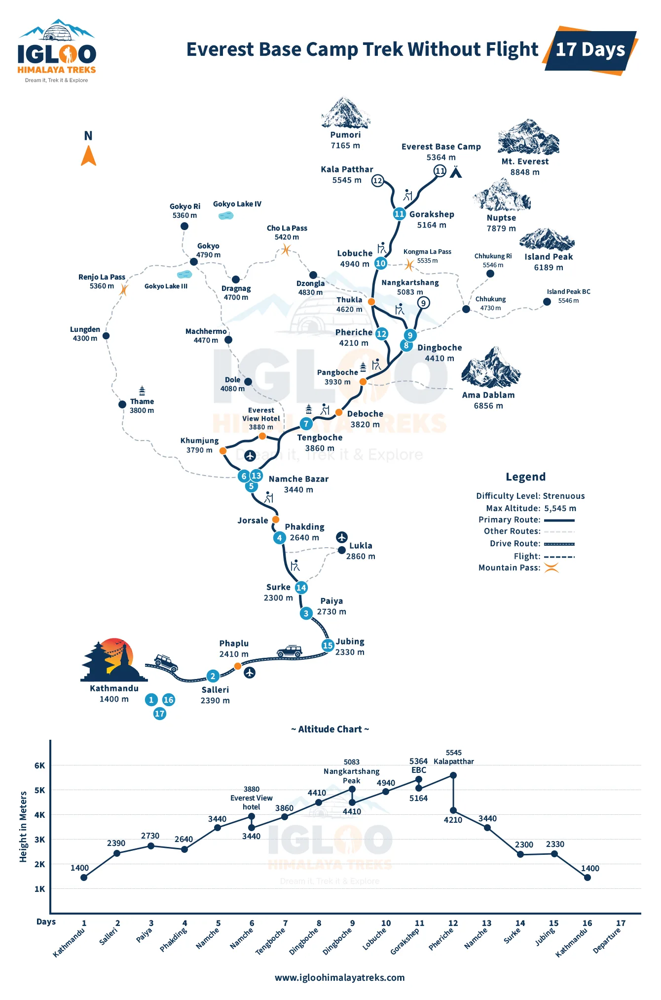
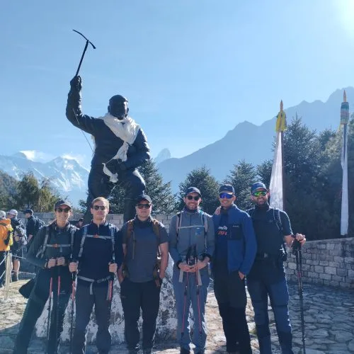
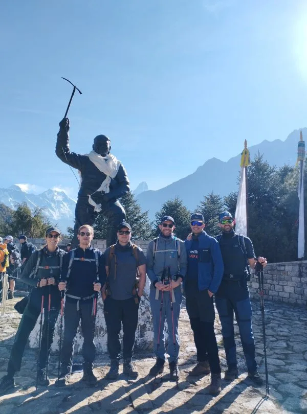
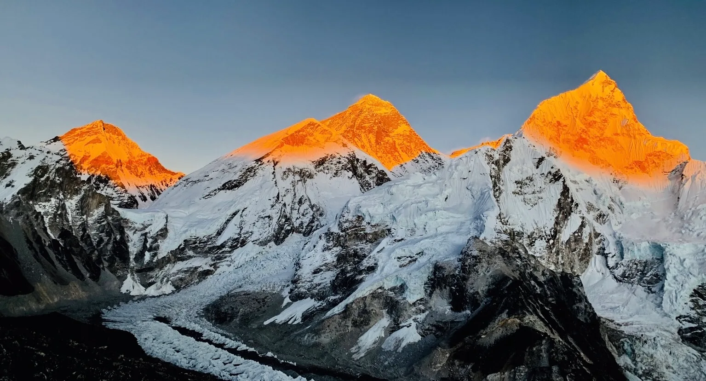
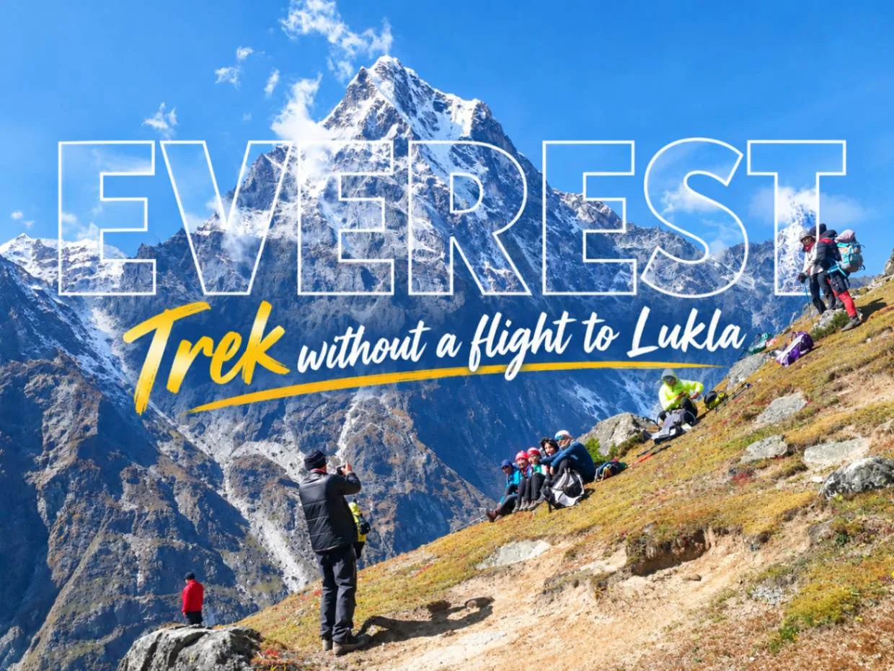
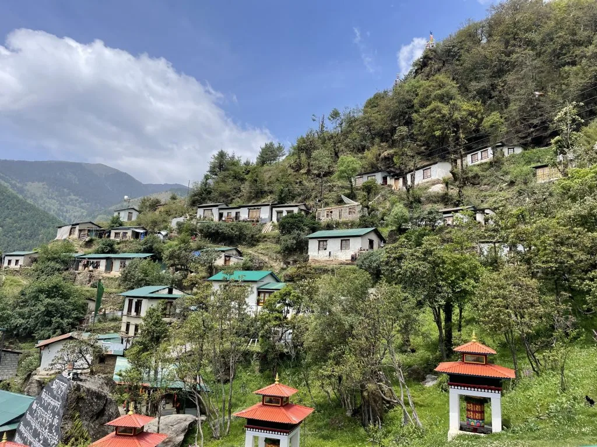

1. Executive Summary: The Rise of the Overland EBC Expedition

For over four decades, the standard way to trek to Everest Base Camp has been a 30-minute twin-otter STOL (Short Take-Off and Landing) flight from Kathmandu or Ramechhap to Tenzing-Hillary Airport in Lukla (2,846m).
However, extreme mountain weather makes Lukla flights notoriously vulnerable to multi-day cancellations during seasonal weather shifts. Furthermore, being catapulted from 1,400 meters in Kathmandu to nearly 3,000 meters in under half an hour exposes unacclimatized trekkers to rapid altitude shock.
Thanks to rapid road infrastructure developments in Solukhumbu District, a smooth network of paved highways and rugged 4WD mountain tracks now connects Kathmandu directly to Tham Danda and Paiya, located just one day's walk south of Lukla!
Key Benefits of Trekking EBC Overland
- 100% Weather Independence: Jeeps drive in fog, rain, and cloud cover that ground airplanes for days.
- Superior Altitude Acclimatization: Ascending slowly over 3 to 5 days stimulates steady erythrocyte (red blood cell) production.
- Cultural Depth: Hike through authentic Rai, Magar, and lower Solu Sherpa villages with zero commercial tourist souvenir shops.
- Substantial Cost Savings: Save up to $350 USD per person on round-trip domestic flights and emergency helicopter surcharges.
2. The 3 Overland Approaches: Tham Danda Jeep, Salleri & Historic Jiri

Depending on your available vacation days and desire for trail adventure, there are three distinct overland entry points:
| Overland Route | Kathmandu Driving Time | Hiking Days to Chheplung/Lukla | Total Trip Length to EBC | Physical Effort | Ideal For |
|---|---|---|---|---|---|
| 1. Tham Danda / Paiya (Modern Fast Route) | 12 to 14 hours (4WD Jeep) | 1 Day (via Surke) | 15 to 16 Days | Moderate | Trekkers wanting to bypass flights with minimal extra hiking days |
| 2. Salleri / Phaplu (Solu Cultural Route) | 9 to 11 hours (Paved + Rough) | 3 to 4 Days (via Ringmo & Kharikhola) | 17 to 19 Days | Challenging | Slow travelers seeking quiet monasteries and authentic homestays |
| 3. Classic Jiri Route (1953 Hillary Expedition) | 6 to 8 hours (Paved Bus) | 6 to 7 Days (via Shivalaya & Junbesi) | 20 to 22 Days | Very Strenuous | Historical purists and ultimate endurance trekkers |
3. The Kathmandu to Tham Danda 4WD Jeep Journey: Road Realities

The drive from Kathmandu to Tham Danda is an epic Himalayan road adventure spanning approximately 280 kilometers across three major river basins:
- Stage 1 (Kathmandu to Ghurmi via BP Highway): 190 km of smooth, Japanese-engineered winding tarmac along the Sun Koshi River. Scenic, fast, and comfortable.
- Stage 2 (Ghurmi to Okhaldhunga & Salleri): 65 km climbing steeply into the middle hills. Paved with occasional potholes; dramatic terrace farming vistas.
- Stage 3 (Salleri to Ringmo & Taksindu Pass - 3,071m): The road transitions to packed dirt and loose gravel, winding past Buddhist stupas and cheese factories.
- Stage 4 (Taksindu to Kharikhola, Bupsa & Tham Danda - 2,300m): The final 25 km is raw, off-road mountain terrain featuring hairpin switchbacks, rocky river crossings, and sheer cliff cuts. Only skilled local drivers in high-clearance 4WD vehicles can navigate this sector.
The final 4 hours from Salleri to Tham Danda are exceptionally bumpy. If you are prone to motion sickness, take motion sickness medication (such as Dramamine or Stugeron) before departing Ghurmi. Bring earplugs, an inflatable neck pillow, and a dust buff.
4. The Immense Acclimatization Advantage: Zero Flight-Shock

The single greatest medical advantage of avoiding flights is gradual, progressive altitude adaptation.
When you fly into Lukla, you land at 2,846m and immediately hike to 3,440m (Namche Bazaar) within 36 hours. This sudden leap causes over 30% of commercial trekkers to experience mild-to-moderate Acute Mountain Sickness (AMS).
| Factor | Standard Fly-In Trek (Via Lukla) | Overland Trek (Via Tham Danda / Jiri) |
|---|---|---|
| Elevation on Night 1 | 2,610m (Phakding) | 2,300m (Tham Danda / Paiya) or 1,800m (Salleri) |
| Days Spent Below 3,000m | 1 Day | 3 to 7 Days of active aerobic hiking |
| Red Blood Cell Production | Sudden demand; delayed adaptation | Early stimulated erythropoiesis; dense oxygen carrying capacity |
| AMS Evacuation Rate | ~3% to 5% of all trekkers | Less than 0.5% on overland approaches |
| Physical Condition at Namche | Winded, heavy legs, slight headaches | Peak aerobic form, hardened calf muscles, fully adjusted |
Mountaineering physicians universally agree: nothing substitutes for physical mileage walked between 2,000m and 3,000m. Overland trekkers arrive at Namche Bazaar feeling strong, energized, and hungry, while fly-in trekkers often nurse throbbing altitude headaches.
5. Full 16-to-18 Day Itinerary: Kathmandu to EBC via Tham Danda

Here is the complete stage-by-stage itinerary for the modern 16-day overland Everest Base Camp expedition:
| Day | Route Segment & Activity | Overnight Altitude | Hiking Duration & Notes |
|---|---|---|---|
| Day 01 | Drive Kathmandu to Tham Danda via Salleri | 2,300m / 7,545ft | 12–14 hrs drive; private 4WD Jeep |
| Day 02 | Trek Tham Danda to Paiya (Chutok) | 2,730m / 8,956ft | 3.5 hrs; gentle stone trail through bamboo forests |
| Day 03 | Paiya to Phakding via Surke & Chheplung | 2,610m / 8,563ft | 5.5 hrs; cross Kari La Pass (3,050m), join main trail |
| Day 04 | Phakding to Namche Bazaar | 3,440m / 11,286ft | 6.0 hrs; cross Hillary Suspension Bridge, ascend Namche Hill |
| Day 05 | Namche Bazaar Acclimatization Day | 3,440m / 11,286ft | Hike to Hotel Everest View (3,880m) & Khumjung |
| Day 06 | Namche Bazaar to Tengboche Monastery | 3,867m / 12,687ft | 5.5 hrs; world-famous monastery courtyard views |
| Day 07 | Tengboche to Dingboche | 4,410m / 14,468ft | 5.5 hrs; cross tree line into alpine tundra |
| Day 08 | Dingboche Acclimatization Day | 4,410m / 14,468ft | Hike up Nangkartshang Peak (5,083m) for Makalu views |
| Day 09 | Dingboche to Lobuche | 4,940m / 16,207ft | 5.0 hrs; Thokla Pass memorial ridge |
| Day 10 | Lobuche to Gorak Shep; Hike to Everest Base Camp | 5,164m / 16,942ft | 7.5 hrs; touch the Khumbu Icefall at EBC (5,364m) |
| Day 11 | Sunrise on Kala Patthar (5,545m); Trek to Pheriche | 4,240m / 13,910ft | 7.0 hrs; grand 360° summit panorama of Everest |
| Day 12 | Pheriche to Namche Bazaar | 3,440m / 11,286ft | 6.0 hrs; rapid descent into oxygen-rich air |
| Day 13 | Namche Bazaar to Paiya / Tham Danda | 2,300m / 7,545ft | 7.0 hrs; bypass Lukla airstrip, descend to roadhead |
| Day 14 | Drive Tham Danda to Kathmandu by 4WD Jeep | 1,400m / 4,593ft | 12–14 hrs drive; celebration dinner in Thamel |
6. The Historic 1953 Jiri Route: Walking in the Footsteps of Giants

Before Lukla's airstrip was carved into the mountainside by Sir Edmund Hillary in 1964, every single mountaineering expedition had to walk from the Kathmandu Valley.
The classic route from Jiri (or Shivalaya) traverses perpendicular to the Himalayan watershed:
- The 'Rollercoaster' Profile: You repeatedly descend into deep subtropical river gorges (1,500m) and climb over towering rhododendron ridges (3,500m). Over 6 days, you accumulate more than 10,000 meters of total vertical elevation gain and loss before even arriving at Lukla!
- Lamjura La Pass (3,530m): The highest point between Jiri and Lukla, draped in colorful prayer flags and surrounded by moss-draped hemlock and fir forests.
- Junbesi Village: One of the cultural jewels of Nepal, home to the famous Hillary School and the nearby Thubten Choling Monastery, where over 300 Tibetan monks and nuns reside.
7. Complete Cost Comparison: Overland vs. Fly-in EBC
How does the overland route stack up financially against standard domestic flights? Here is the exact cost comparison for 2026–2027:
| Expense Item | Standard Fly-In Trek (Lukla Flight) | Overland Trek (4WD Jeep via Tham Danda) | Savings / Difference |
|---|---|---|---|
| Primary Transportation | $430 USD (R/T Flight + Ramechhap transfers) | $90 – $140 USD (R/T Shared Jeep Seat) | Save $290 – $340 USD |
| Private Vehicle Alternative | N/A (Fixed flight ticket) | $300 – $380 per Jeep (split by up to 6 people) | Only $55–$65 per person for private comfort! |
| Lower Trail Meals (Days 1–3) | $35 – $40 / day in upper Khumbu | $20 – $25 / day in Solu villages | Save ~$45 USD on food |
| Extra Guide/Porter Days | 12 to 14 Days ($600–$700 total) | 15 to 16 Days ($750–$800 total) | Adds ~$100–$150 in wages |
| Helicopter Delay Insurance Buffer | Recommended ($300–$500 emergency cash) | $0 (Road transport is guaranteed) | Priceless peace of mind |
| Net Total Package Estimate | $1,450 – $1,850 USD | $1,250 – $1,550 USD | Save $200 – $300 USD overall |
8. Permits & Checkposts on the Overland Route
Permit requirements depend slightly on whether you enter via Tham Danda or Jiri:
| Permit Name | Cost (USD / NPR) | Where Obtained | Required For |
|---|---|---|---|
| Khumbu Pasang Lhamu Permit | NPR 3,000 (~$23 USD) | Lukla, Toktok, or Paiya Checkpost | Mandatory for all trekkers entering Khumbu |
| Sagarmatha National Park Permit | NPR 3,390 (~$26 USD) | Monjo Checkpost or NTB Kathmandu | Mandatory for all trekkers entering Park boundaries |
| Gauri Shankar Conservation Permit (GCAP) | NPR 3,000 (~$23 USD) | Shivalaya Checkpost or NTB Kathmandu | Only required if hiking from Jiri / Shivalaya |
9. Authentic Solu Culture: Rai, Magar & Lower Sherpa Villages

While the upper Khumbu above Namche Bazaar is an English-speaking tourist corridor dominated by souvenir shops, cafes, and bakery franchises, the Solu foothills remain a thriving agrarian mountain society:
- Ethnic Diversity: You walk through terraced Kirat Rai and Magar villages in Kharikhola before ascending into the Sherpa settlements of Ringmo, Taksindu, and Paiya.
- Organic Food: Teahouses serve freshly harvested potatoes, stinging nettle (Sisnu) soup, organic buckwheat pancakes, and locally produced yak cheese.
- True Solitude: You can walk for three hours on the trail between Tham Danda and Surke without seeing another foreign trekker, sharing the path only with school children and local mule drivers.
10. Physical Stamina & Trail Cruxes of the Lower Approach
Be prepared: the lower trail between Tham Danda, Paiya, and Chheplung is not flat!
Unlike the graded river paths of the upper trail, the Solu foothills are characterized by steep, undulating topography:
The Kari La Pass Crux
Between Paiya and Surke, you must cross the Kari La Pass (3,050m). The descent down to Surke is notoriously steep, slick with bamboo leaves, and muddy after rainfall. Dual trekking poles are indispensable.
Mule Caravan Etiquette
Because heavy construction supplies and food cannot be flown into Lukla at scale, the overland route is the primary transport artery. Long mule and horse trains carry loads up from Tham Danda. Always stand on the mountain-wall side when they pass.
11. Seasonal Road & Weather Challenges (Monsoon Mud vs Winter Frost)
Road conditions past Salleri vary dramatically by season:
| Season | Road Condition (Salleri to Tham Danda) | Jeep Reliability | Travel Recommendation |
|---|---|---|---|
| Autumn (Oct – Nov) | Dry, packed dirt, minimal mud | Excellent (98% on-time) | Peak season; book private 4WD in advance |
| Spring (Mar – May) | Dry; occasional pre-monsoon dust | Very High (95%) | Spectacular rhododendron blooms along Taksindu |
| Winter (Dec – Feb) | Hardpack frozen dirt; ice on Taksindu Pass | High (90%); slower speeds over passes | Cold morning starts; clear mountain views |
| Monsoon (Jun – Aug) | Deep mud, landslides, washed-out tracks | Poor (Frequent 24h delays) | Not recommended; road often blocked at Kharikhola |
12. The Smartest Strategy: The 'Overland In, Fly Out' Hybrid

Over 60% of our overland clients choose our signature 'Overland In, Fly Out' Hybrid Route:
- Phase 1 (The Overland Ascent): Take a 4WD Jeep to Tham Danda and walk in over 3 days. You gain bulletproof red blood cell acclimatization, eliminate flight cancellation stress on Day 1, and enjoy Solu's cultural wonders.
- Phase 2 (The High Trek): Hike from Namche to Everest Base Camp and Kala Patthar in peak physical condition with zero altitude headaches.
- Phase 3 (The Flight Descent): Instead of spending 2 days hiking back to Tham Danda and enduring another 14-hour jeep ride, hike down to Lukla and take a quick 35-minute morning flight back to Kathmandu!
Flight delays at the END of a trek are far less disruptive than delays at the beginning. If bad weather delays your flight out of Lukla by a day, you have already completed your lifelong dream of reaching Everest Base Camp! Furthermore, helicopters can easily evacuate stranded trekkers back to Kathmandu.
13. Overland Packing, Motion Sickness & Survival Tips
To survive the 12 to 14-hour mountain jeep transfer in total comfort, pack these essential cabin items:
- Waterproof Duffle Protection: Your main duffel bag will be tied to the metal roof rack of the Jeep. Wrap it in a heavy-duty waterproof rain cover or heavy contractor trash bag to shield it from road dust and diesel exhaust.
- Motion Sickness Medication: Take Cinnarizine (Stugeron) or Dimenhydrinate (Dramamine) 30 minutes before departure from Kathmandu.
- Noise-Canceling Earphones & Offline Entertainment: Download offline music, audiobooks, and podcasts. Cellular 4G reception drops in deep river valleys between Ghurmi and Salleri.
- Snacks & Insulated Water: Highway dal bhat stops are delicious but spaced 4 to 5 hours apart. Carry roasted nuts, dried fruit, electrolytes, and plenty of water.
- A Good Neck Pillow: Essential for preventing neck strain while napping across bumpy gravel sections.
14. Frequently Asked Questions: Everest Base Camp Without Flight
How do you get to Everest Base Camp without flying?
You take a 4WD Jeep from Kathmandu to Tham Danda (or Paiya) via the BP Highway and Salleri (12–14 hours). From Tham Danda, you hike 1 day to Paiya and Surke, joining the main Everest Base Camp trail at Chheplung just below Lukla. Alternatively, you can take a bus to Jiri or Shivalaya and walk the historic 6-day pioneer trail.
How long does the overland EBC trek take?
Via Tham Danda, the trek takes 15 to 16 days round-trip (only 2 to 3 days longer than the fly-in route). If you trek the classic route from Jiri, expect 20 to 22 days round-trip from Kathmandu.
Is the 4WD Jeep drive safe?
The first 200 km (Kathmandu to Salleri) is mostly smooth paved tarmac. The final 35 km past Salleri is a rough, unpaved mountain dirt road with hairpins and river crossings. When driven by experienced local drivers in sturdy 4WD Mahindra or Tata vehicles during the dry season (autumn and spring), it is very safe, though bumpy.
How much does the overland EBC trek cost compared to flying?
A round-trip shared Jeep seat costs roughly $90 to $140 USD, compared to $430 USD for round-trip Lukla flights and Ramechhap transfers. Trekkers typically save between $250 and $350 USD per person by traveling overland.
Do I still need the same permits for the overland route?
Yes. You still require the Khumbu Pasang Lhamu Rural Municipality Permit (NPR 3,000) and the Sagarmatha National Park Permit (NPR 3,390). If you trek from Jiri or Shivalaya, you additionally need the Gauri Shankar Conservation Area Permit (NPR 3,000).
Does the overland route reduce the risk of altitude sickness?
Significantly! By hiking over several days between 2,000m and 2,800m before reaching Namche Bazaar, your body gradually synthesizes extra hemoglobin and red blood cells. The incidence of Acute Mountain Sickness on the overland route is less than 5%, compared to over 30% for fly-in trekkers.
Can I drive to EBC in one day?
No vehicle can drive all the way to Everest Base Camp. The road ends at Tham Danda / Paiya. From there, the entire Khumbu region is strictly pedestrian, mule, and yak traffic only.
Can I do an 'Overland In, Fly Out' hybrid trek?
Yes! In fact, this is our most highly recommended itinerary. You drive into Tham Danda to build natural acclimatization and experience Solu culture, hike to EBC, and then fly out of Lukla back to Kathmandu in 35 minutes, saving travel time on your return leg.

Ready to Experience the Himalayas?
Whether you are preparing for high-altitude trekking, cultural circuits, or alpine summit expeditions, start planning a bespoke journey tailored to your fitness, travel season, and style.